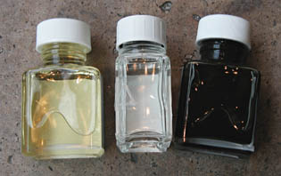

Les
vernis définitifs
Le
vernis pour la gouache
Il remplit en fait la fonction de fixatif. Il est moins le protecteur que le
"fixateur" de cette peinture réversible. Il ne peut être appliqué
au pinceau (ce dernier entraînerait la peinture). Restent donc les aérosols et
la soufflette. L'internaute trouvera les
indications nécessaires à la fabrication d'un vernis gouache maison dans
l'article sur la gomme laque.
Le
vernis-colle
Il est consacré aux collages et assemblages divers, aux travaux
tridimensionnels, etc. A cette heure, nous ignorons presque tout de ses
caractéristiques techniques (chimie, vieillissement) mais nous enquêtons ! Un
seul détail : il rend nécessaire l'application d'une surcouche d'un second
produit destiné à neutraliser la viscosité du premier.
Les
vernis à vieillir et à craqueler
Destinés, selon les fabricants, à n'importe quel type de peinture, leur
composition (jamais affichée) nous est totalement inconnue.
Le vernis à craqueler doit théoriquement être posé au-dessus d'une couche
de vernis à vieillir. Certaines sources non confirmées indiquent que la
sous-couche n'est pas nécessaire. D'autres, plus sûres, précisent que même
avec la sous-couche le produit ne fonctionne pas du tout.
Avouons que pour l'instant nous nageons dans le flou à cause en premier lieu
du manque d'informations de la part des fabricants. Il est notablement étonnant
qu'aucune précision ne soit apportée en ce qui concerne l'adéquation de ces
produits à tel ou tel type de peintures. Nous disposons d'assez de témoignages
pour savoir que le client terminal se trouve souvent assez mécontent.
Enquête en cours.
Le
vernis polyuréthane
Lire la page consacrée aux polyuréthanes.
Les
vernis pour la peinture à l'huile
Le mot "vernis" étant largement détourné de son sens,
précisons pour commencer que les substances qui peuvent véritablement prétendre
porter ce nom sont celles qui ont un rôle protecteur (voir
définition). Ils correspondent sensiblement aux produits que l'on nomme
souvent "vernis définitifs". Cependant, ce terme même est abusif car
précisément, un vernis doit pouvoir être retiré. Cependant ne jouons pas la fine
bouche : l'épithète "définitif" permet de distinguer ce produit des "vernis
à peindre", "vernis à
retoucher", etc.
L'utilisation normale du vernis définitif implique un délai d'attente
après finition du tableau de l'ordre d'un à deux ans au moins, sauf peinture
extrêmement maigre (six mois peuvent alors suffire).

Le vernis est très fortement chargé en résine. Il est très solide. Son
diluant est de préférence l'essence de pétrole : celle-ci s'évapore
intégralement, n'entraînant aucune viscosité additionnelle.
Certains
peintres l'utilisent dilué comme "vernis à peindre"
(médium), ce qui n'est pas forcément une bonne idée (voir détournement
des produits).
Les résines des vernis définitifs sont très différentes les unes des
autres. Sur l'image, nous voyons de gauche à droite
* un vernis à base de gomme dammar
* un vernis synthétique, dont la composition n'est pas annoncée, comme
c'est le cas le plus souvent
* un vernis au copal, à diluer amplement comme le suggère la teinte de ce
produit (sachant que la plupart des auteurs s'accordent pour dire qu'il va jaunir en
vieillissant !). Il est réputé très dur, ce qui n'est pas forcément un
avantage.
Le dosage des résines est fondamental.
Nous ne donnerons pas de recettes de vernis définitif pour l'huile sur ce
site, laissant l'internaute choisir entre
* la fabrication maison, qui ne se distingue de la réalisation
de médiums que sur quelques points :
* la charge en résine, que l'on peut augmenter
* la suppression de tout composant poissant.
Dans le cas de la résine dammar notamment, il est souhaitable de faire
décanter plusieurs fois le liquide (lire
passage in Le médium maigre au dammar)
* le choix de l'essence, de préférence minérale (essence de pétrole)
* la diminution de la quantité d' huiles et siccatifs éventuels.
Un vernis n'est pas censé être particulièrement gras
* l'emploi d'oléorésines en petite quantité, assez conseillé.
Venise ou Canada, elles sont
assouplissantes et peuvent réduire des problèmes d'embus
* l'ajout éventuel de cire (voir ci-dessous) et
autres produits mats nécessitant un double vernissage,
* l'utilisation de produits du commerce. Attention : combiner plusieurs
produits est possible mais nous conseillons de choisir une seule et
même marque car les fabricants font parfois des "choix
philosophiques" différents, pouvant entraîner de désagréables
surprises.
Des cires dans les vernis pour
l'huile
Comme indiqué dans l'article sur les cires en tant
que liants, ces produits sont thermiquement instables à cause de leur point
de fusion très bas (voir thermosensibilité). Il faut prendre certaines précaution à l'accrochage des
tableaux. Ceux-ci doivent être éloignés des sources de chaleur (spots,
moteurs, radiateurs, etc.).
Cependant, ces vernis sont remarquables pour leur pouvoir
matifiant.
Certains auteurs recommandent un brossage extrêmement doux après
apposition, à sec, ce qui peut influer sur l'aspect mat ou satiné. On est
effectivement en présence d'une encaustique, donc l'action de frotter
pourrait jouer un rôle.
Une réserve importante : les vernis à la cire sont réputés les plus
durs à enlever lors du dévernissage (information provenant des fabricants
eux-mêmes). La raison en serait que la cire a tendance à pénétrer très
intimement la surface picturale (selon certains auteurs).
Il peut donc être salutaire
- c'est à tout le moins une mesure de prudence minimale - de pratiquer un double vernissage (voir
ci-dessous) afin que la surface du tableau ne soit pas en contact avec un
vernis cireux, ce qui permet d'éluder le problème.
Vernis mats
et double vernissage
Ce procédé est recommandé par les
fabricants pour l'emploi des vernis mats (éventuellement satinés), notamment parce que
ceux-ci contiennent très souvent de la cire (lire
absolument le passage ci-dessus). Il faut donc passer une première couche de vernis brillant,
puis une couche de vernis mat. Lors du dévernissage, les deux couches de vernis
sont retirées comme s'il n'y en avait qu'une seule sans que la surface
picturale soit endommagée.
Une autre raison d'appliquer un vernis
intercalaire brillant est liée au fait que mat sur mat donne flou. Lire une
citation de Xavier
de Langlais dans le Courrier des Lecteurs.
Vernir
ou non ?
Concernant l'emploi normal des vernis, il faut considérer la réalité plus
que la théorie :
* la théorie veut qu'un vernis dit "définitif" soit retiré
régulièrement, après quelques décennies généralement
* la réalité est que souvent ce travail n'est pas toujours effectué, que les
vernis se comportent mal, jaunissent, craquèlent (emportant parfois des
morceaux de peinture) et à terme ne protègent plus rien.
En ce qui concerne la peinture acrylique, il est encore un peu trop tôt pour
affirmer que les vernis remplissent mieux ou moins bien leur fonction, mais
concernant l'huile, il est permis de s'interroger (de nombreux peintres
s'interrogent en effet) sur l'intérêt réel du vernis "définitif".
En effet, le peintre peut se douter que l'acheteur n'aura pas la constance ou
les moyens suffisants pour rafraîchir le vernissage régulièrement. Il vaut
souvent mieux, dans ce cas, ne pas vernir ou vernir légèrement, avec un vernis
à retoucher par exemple.
Cependant, il ne faut pas oublier l'une des fonctions premières du vernis définitif : réduire les embus.
Que faire alors ? Vernir quand même ?
Il existe des procédés alternatifs :
* en premier lieu, une bonne connaissance de la siccativité des
pâtes employées (facteur d'absorption des pigments, liant utilisé), un usage adapté des médiums pour rectifier le
degré de brillance ou de matité
* pour la peinture à l'huile, l'adjonction finale d'une fine couche d'huile
tamponnée (chiffon, Sopalin ®) donne un délicieux satiné.
Xavier de
Langlais mentionne cependant la résurgence des embus à moyen ou long
terme, une fois l'huile bue par les pigments fautifs. Ce problème ne se pose
que pour des pigments vraiment rebelles.
* pour les peintures acryliques, vinyliques ou oléagineuses,
l'ajout d'une
couche de certains médiums (médium flamand, gel acrylique léger) résout
bien mieux le problème des embus que l'emploi de vernis. Les
deux procédés ne sont d'ailleurs pas incompatibles. D'une certaine manière,
résoudre le problème des embus par les médiums avant le recours au vernis
est certainement le procédé le plus correct de toutes manières :
quoiqu'il advienne du vernis, le tableau lui-même ne présentera plus
d'anomalies sur le plan de l'homogénéité brillance/matité, les résines
ayant fait leur office.
* une conservation dans des conditions correctes, un
""nettoyage" régulier très doux de la surface à l'eau
distillée (vérifier le pH qui doit
être neutre).
Pour la peinture acrylique, le vernis représente une protection définitive
extrêmement solide qui peut être lavée mais difficilement retirée, sauf
exceptions. Le
peintre peut, pour cette raison, choisir de ne pas vernir, sachant que de toutes
manières les acryliques (et la peinture vinylique) peuvent être nettoyées
sans danger.
Retour
début de page